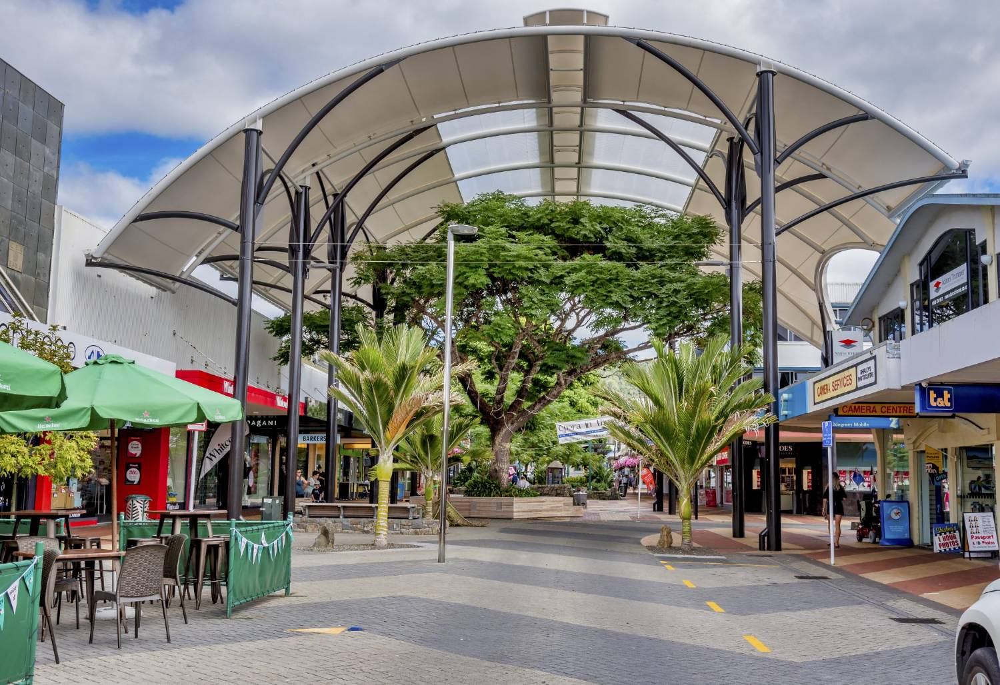
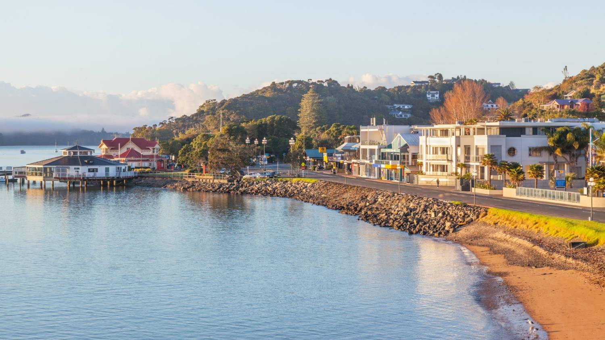
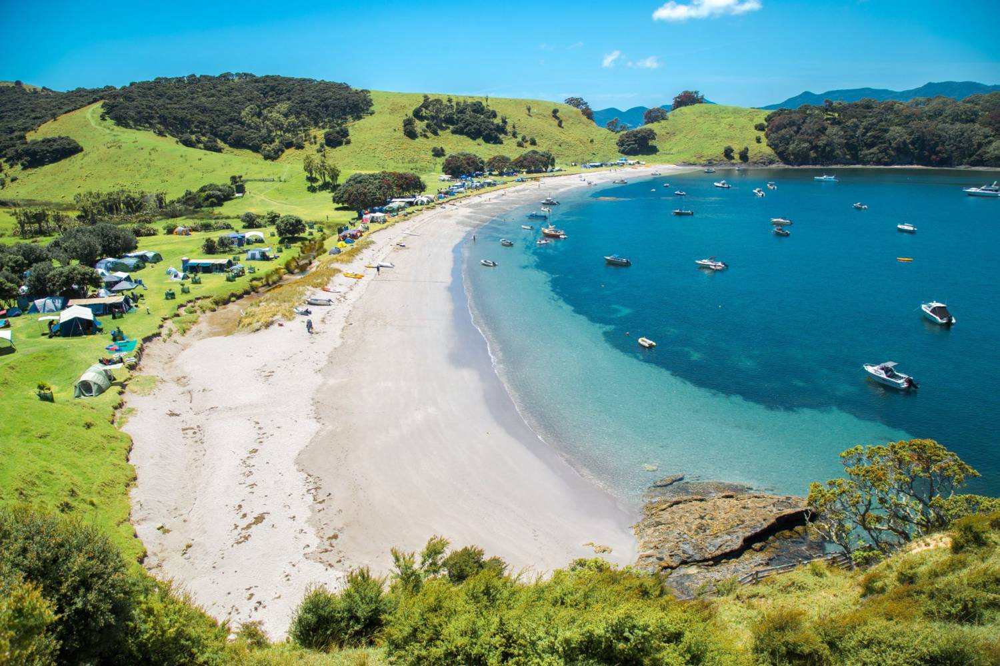
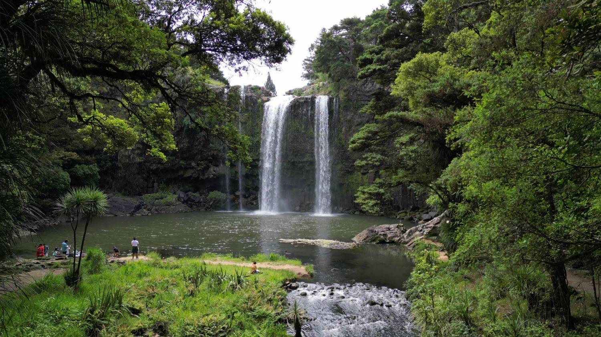
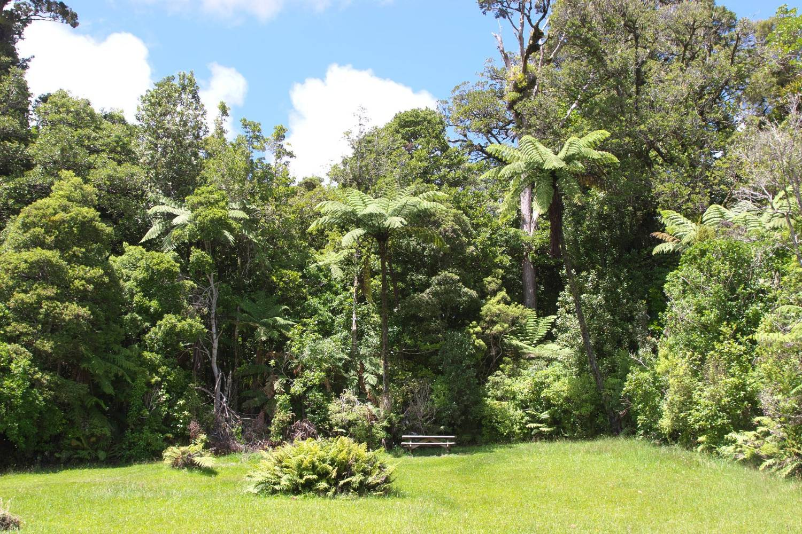

Kia ora, and a warm welcome to Aotearoa
Moving to the other side of the world is a big step — and choosing Northland means arriving in the place where New Zealand’s story begins. Te Tai Tokerau is the country’s subtropical, near-winterless north: two coastlines, ancient kauri forests, and the founding grounds of the nation at Waitangi.
You won’t be doing this alone. New Zealanders are known for their warmth and manaakitanga — hospitality and care for others — and Northland’s close-knit communities welcome newcomers quickly. Whangārei is the region’s hub; Kerikeri, Paihia and the Bay of Islands sit a short drive north, with Auckland only a few hours south when you want the big city.
This guide is written to make your move smooth and unhurried — from the health system, IRD numbers and KiwiSaver to the towns, the school zones and where to spend your first free weekend. Think of it as the conversation we’d have over a flat white, in your pocket for whenever you need it.
Nau mai, haere mai ki Aotearoa — welcome to New Zealand. We can’t wait to see you settle in.

"Northland is for people who want to slow down without giving anything up."
Ngā mihi nui,
Sophie
Sophie Careem · Founder & Director, Ethicare Resourcing
Northland rewards people who want the coast and the community woven into everyday life. It’s a smaller, spread-out region — a car is essential and some services are more local than in a big city — but housing goes further, the climate is the mildest in the country, and you’re welcomed in fast.
- 01Welcome & OverviewHistory, culture, transport & climate
- 02HealthcareThe system, GPs, pharmacies, urgent care
- 03Banking & FinanceAccounts, IRD, KiwiSaver, getting paid
- 04Cost of LivingPrices, an example budget & Sophie’s insights
- 05Housing & AreasRenting and a guide to the towns
- 06Shopping & FoodTowns, supermarkets, world food, worship
- 07Recreation & TravelTwo coasts, islands, forests & falls
- 08Education & FamilySchooling, zoning, childcare & family life
- 09Practical InfoChecklists, emergencies, community & phrases
Sort a car early. Northland is spread out and beautiful precisely because it’s rural — the open roads are part of the appeal, but you’ll want your own wheels from week one.
Where New Zealand’s story begins
Te Tai Tokerau is the birthplace of the nation — home to the Waitangi Treaty Grounds and a deep, living Māori heritage, alongside a relaxed, coastal culture that rewards slowing down and settling in.
Go deeperIs New Zealand right for you and your family?→Deep roots and an unhurried pace
Each of the region’s towns has its own character — Whangārei with its buzzing town basin and marina, Kerikeri’s orchards and cafés, and the historic bayside pair of Paihia and Russell, steeped in early Māori and colonial history.
Northland is the heartland of Ngāpuhi, the country’s largest iwi, and Māori culture is woven through daily life across Te Tai Tokerau. The Waitangi Treaty Grounds, where the nation’s founding document was signed in 1840, sit at the edge of the Bay of Islands.
Markets, art trails and a growing food and wine scene give the north a creative, easygoing culture — one grounded in a very long history, and quick to make room for newcomers.

Getting around
Northland is a spread-out, coastal region best explored by car — the open roads are part of the appeal. State Highway 1 threads north from Auckland through the towns, bays and forests along the way.

Driving
Most households run a car; a four-lane highway now speeds the trip south, and the rural roads north are half the pleasure. New Zealanders drive on the left.
The spine
State Highway 1 links Whangārei, the Bay of Islands and the Far North, with scenic loops out to both coasts.
Air
Whangārei and Kerikeri airports offer quick daily links to Auckland and its international connections.
Auckland
The big city and its international airport are a few hours’ drive south — close enough for a weekend, far enough to feel away from it all.
The country’s mildest climate
Northland earns its "winterless north" name: warm, humid summers and gentle winters, with the sea always close by and frost a rarity. It’s a place built for an outdoor life all year round.
Winters are mild and wet rather than cold, and summers are warm and humid. Bring layers and a good raincoat, but expect far more beach days than you’re used to — even in the cooler months.
Community care across the north
Northland combines a regional base hospital with a network of smaller hospitals and clinics reaching the Bay of Islands and the Far North — all delivered by Health New Zealand | Te Whatu Ora, and known for genuinely connected teams.
Go deeperUnderstanding the New Zealand health system→Whangārei Hospital
The region’s main base hospital, providing acute, surgical, maternity and specialist services for Te Tai Tokerau within Health New Zealand | Te Whatu Ora.
Bay of Islands Hospital
At Kawakawa, serving the mid-north with inpatient, maternity and community services.
Kaitāia & Dargaville
Rural hospitals serving the Far North and the Kaipara, part of the same Te Whatu Ora network.
Primary & community care
GP practices, Māori health providers and community teams reach the towns and rural districts across the region.
GPs, pharmacies & urgent care
Registering with a GP & dentist
Once you settle in, enrol with a local GP. Enrolment means subsidised visits — typically around NZ$50–$70, more as a casual patient. In smaller towns, join a practice’s list early. Dental care is private (roughly NZ$90–$150 for a check-up).
Pharmacies
Pharmacies are found in the towns across the region. Prescriptions are partly subsidised once you’re enrolled with a GP — commonly a small standard charge per item.
Setting up your finances
Getting your finances in order early makes day-to-day life much easier. Most of this can be started before you arrive.
Go deeperSalary & pay in New Zealand healthcare→Opening a bank account
The major banks are ANZ, ASB, BNZ, Kiwibank and Westpac. You’ll usually need your passport, work or resident visa, and proof of a NZ address. Many banks let you start online before arrival, then activate in person — ask for online banking and a debit card at the same time.
Tax — your IRD number
Every worker needs an IRD number from Inland Revenue. Apply online once you have a NZ address and bank account; it usually takes around 7–10 working days. Give the number to payroll as soon as it arrives so the correct tax is applied. Wages are commonly paid fortnightly.
Start your bank account application before you fly. Having an account number ready makes your IRD application and payroll setup far smoother in those hectic first weeks.
KiwiSaver & sending money home
KiwiSaver is a government-supported retirement savings scheme. On a work visa you can usually opt in or out. Contributions are a percentage of your pay (commonly 3%, 4%, 6%, 8% or 10%), with employers contributing at least 3%. You can withdraw your funds if you permanently leave New Zealand.
Sending money overseas: banks can transfer internationally, but specialist services such as Wise or OFX are often cheaper and faster. Always compare the exchange rate and the fees before moving larger amounts.
Space and value in the north
Compared with the big cities, Northland generally offers more space and better value — a chance to live close to the coast, or on a lifestyle block, without an Auckland price tag.
Everyday item · approx. price (NZ$)
| 1 litre of milk | $2.50 – $3.50 |
|---|---|
| Loaf of bread | $2.50 – $4.00 |
| Dozen eggs | $7 – $10 |
| Flat white coffee | $5.50 – $6.50 |
| Mid-range meal for one | $25 – $40 |
| Monthly gym membership | $55 – $90 |
| Home broadband | $75 – $100 / mo |
Example monthly budget · one person (NZ$)
| Rent (room / small 1-bed) | $1,100 – $1,800 |
|---|---|
| Power & water | $160 – $230 |
| Internet | $75 – $100 |
| Petrol & car running | $180 – $320 |
| Groceries | $400 – $600 |
| Mobile phone plan | $30 – $50 |
| Entertainment & leisure | $160 – $320 |
| Estimated total | $2,100 – $3,400 |
Prices are indicative and change over time — use the calculators at the back of this guide for a personalised estimate. A car is a bigger part of the budget here than in the cities.
"Northland is for people who want to slow down without giving anything up — the coast, the community and that famously mild climate change how they feel about work and home."
It’s a smaller setting, so you become a genuine part of the community quickly, and you’re still only a few hours from Auckland when you want the bright lights. Housing goes much further here — just plan for a car and slightly longer trips for some specialist services.
Sophie Careem · Founder & Director, Ethicare Resourcing
Finding a place to live
Northland offers everything from town houses in Whangārei to bayside homes in the Bay of Islands and lifestyle blocks on the coast. Living near the water is far more attainable here than in Auckland — just factor the drive to work into where you settle.

Most rentals are advertised online and can move quickly in the popular coastal towns. The main sites are trademe.co.nz/property (NZ’s largest rental marketplace) and realestate.co.nz (nationwide rentals and homes for sale). Many people rent for a few months first to get to know the area before committing.
A guide to the areas
Whangārei city & suburbs
The region’s hub, with the widest choice of homes, schools and amenities — suburbs like Kensington, Onerahi and Tikipunga around the town basin.
Whangārei Heads & the coast
Beaches, bush and harbour-edge living a short drive from the city — sought-after and scenic.
Kerikeri
The Bay of Islands’ cafe-and-orchard hub — a lively, growing town popular with families and newcomers.
Paihia & Russell
Historic bayside towns on the water — smaller, tourist-flavoured and beautiful, with a premium for the view.
Kamo & the northern suburbs
Established, family-friendly suburbs just north of Whangārei with good value and easy access to town.
The Far North & Kaipara
Kaitāia, Dargaville and the rural districts — the best value and the most space, in exchange for a more remote, small-town life.
Decide how far you’re happy to drive to work before you fall in love with a coastal cottage. If you have children, check the local school and its zone before you sign — in smaller towns, choice can be limited to one or two schools.
Utilities, rates & rubbish
Power & gas
Choose from providers like Genesis, Mercury, Meridian and Contact. Compare rates on Powerswitch (powerswitch.org.nz).
Water & rates
Council rates fund local services; rural properties often use tank water and septic systems, so ask when renting.
Rubbish & recycling
Kerbside collection runs in the towns; rural areas use transfer stations and pre-paid bags.
Internet
Fibre reaches the towns; rural homes may use fixed-wireless or satellite. Spark, One NZ and 2degrees are the main providers.
Where to shop
Shopping in Northland centres on Whangārei, with town centres and weekend markets across the region. A few of the main ones:
Whangārei & Okara Park
The region’s main retail hub, with big-box stores, supermarkets and the city centre’s shops and cafés.
The Town Basin
Whangārei’s marina-side quarter of galleries, boutiques, restaurants and the Hundertwasser Art Centre.
Kerikeri
The Bay of Islands’ shopping and food town, with orchard gate stalls, a famous farmers’ market and specialty grocers.
Growers’ markets
Weekend markets across the region bring local produce, seafood, honey and crafts straight from the source.
Supermarkets & groceries
New Zealand’s supermarkets fall into a few main groups — knowing the difference helps you balance budget and convenience.
| Pak’nSave | The cheapest of the big chains — a no-frills, bulk-buy warehouse format. Best for budget shopping. |
|---|---|
| Woolworths | Mid-range and widespread, with strong online shopping and delivery (formerly Countdown). |
| New World | More upmarket, with a wider fresh and specialty range. |
| Four Square & FreshChoice | Smaller neighbourhood stores that are a lifeline in the coastal and rural towns. |
Whangārei has the big supermarkets; smaller towns rely on New World, Woolworths and Four Square. Northland’s growers, orchards and fishers mean superb local produce and seafood. Bring your own bags — single-use plastic bags are banned.
A taste of home
Halal & South Asian. Whangārei has Indian and Asian grocers and a mosque community; many supermarket lines are halal-processed — check the label.
Asian. Chinese, Filipino and South-East Asian stores and eateries are found in Whangārei and Kerikeri.
British & European. The larger supermarkets and specialty importers stock familiar brands; anything harder to find is a quick order or an Auckland trip away.
Northland has welcoming communities across many faiths — Christian churches of many denominations (with a strong Rātana and Māori church presence), a mosque in Whangārei, and smaller Hindu and Buddhist groups. Most list service times online, and many are among the quickest ways to build a support network when you arrive.
Two coasts, endless water
Northland is built for life on and around the water — sailing the Bay of Islands, surfing the west coast, and walking among ancient kauri giants.
Go deeperLiving & thriving in New Zealand→
Eight things not to miss


Schooling & study
Northland offers state, state-integrated and private schools across its towns and rural districts. The school year runs late January to mid-December, in four terms with two-week breaks in April, July and October.
Go deeperEducation & schools in New Zealand→Early Childhood (ECE)
Kindergartens, daycare, kōhanga reo and home-based care for ages 0–5. Government 20-hours funding applies for ages 3–5.
Primary & intermediate
State, state-integrated and private schools for Years 1–8, including small rural schools with a close community feel.
Secondary
Years 9–13, working towards NCEA, the national qualification.
Tertiary
NorthTec offers vocational and tertiary study close to home, with university options in Auckland.
Schools & zones
In New Zealand, where you live can determine which state school your children attend. In Northland’s smaller towns choice may be limited to one or two schools, so it pays to check early.
In-zone = guaranteed
Children living inside a school’s enrolment zone are guaranteed a place.
Out-of-zone = ballot
You can still apply, but popular schools run a ballot for limited spots.
Ask locally
In rural areas, talk to the school directly — many are not zoned at all.
The order that works best: shortlist schools you like → check zones or call the school → search for rentals nearby → confirm enrolment before you commit.
Beyond school and work, Northland offers an outdoor, water-based childhood on the doorstep — beaches, boats, bush walks and fishing, much of it free. Smaller schools with a close community feel, space and value for family life, and a genuinely welcoming pace make it a grounded place to raise children. They often settle fastest through school, sport and local clubs.
Pre-departure checklist
Work through these before you fly. Keep digital and printed copies of everything important.
Go deeperUseful contacts & the people we trust→Documents
Money & travel
Your first weeks
Emergency & health
Mental health — call/text 1737 · Police (non-urgent) 105
Everyday services
AA roadside 0800 500 222
Community & expat groups
One of the quickest ways to settle in is to find your people. Search Facebook groups like "Whangārei / Northland Community", your home-country community and local parents’ groups; Meetup and local clubs list hiking, boating, hobby and newcomer groups; and sports and cultural clubs all welcome newcomers.
New Zealand is welcoming and progressive — marriage equality has been law since 2013, with strong protections against discrimination. OutLine Aotearoa offers rainbow support on 0800 688 5463.
Everyday te reo & Kiwi phrases
We guide you through every stage
Relocating to Northland can feel like a lot to hold at once. From the first conversation to long after you land, we’re here to support you — the same six-step journey you’ll find on our website.
Discovery call
Understanding your goals, your family situation and whether New Zealand is the right fit.
Eligibility & registration
Assessing your registration requirements and helping you understand your options clearly.
Opportunities & interviews
Discussing roles and locations, then preparing you for interviews and what employers look for.
Offer & decision support
Helping you evaluate opportunities and make the decision that’s right for you.
Visa & relocation guidance
Supporting you through the practicalities of moving to New Zealand.
Settling in
Ongoing support as you begin your new life and career in Northland, long after you arrive.
Work out your cost of living
Thank you for taking the time to read this guide.
Moving to the other side of the world is one of the biggest decisions you’ll ever make, and there’s a lot to take in — so please don’t feel you have to have it all figured out at once. My hope is that this guide has made Northland feel a little more familiar, and the move ahead a little less daunting.
Whatever stage you’re at, we’re always happy to talk anything through — the big decisions or the small worries. Whether you choose to work with Ethicare or not, I wish you every success in your new adventure.
Ngā mihi nui,
Sophie
Sophie Careem · Founder & Director, Ethicare Resourcing